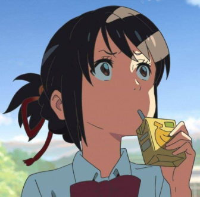
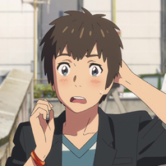
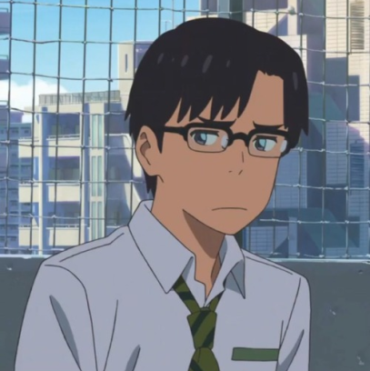
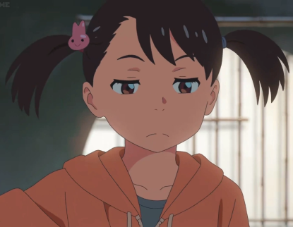
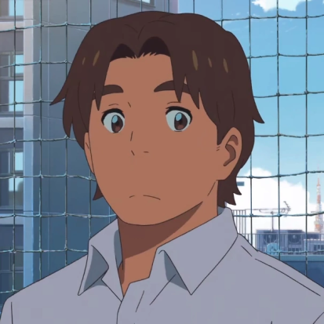

Mitsuha é uma jovem de 17 anos do filme Kimi no Na Wa (Your Name), que podemos considerar uma das personagens principais.
Ela faz o ensino médio, mora na cidade de Itomori,
na qual, vive junto com sua avó, irmã e também vivia com seu pai, mas após a morte de sua esposa,
ele acabou indo embora.
data de nascimento:16 de janeiro de 1995
lugar de nascimento:São paulo(SP)
ocupação:Atriz, Cantora e Dubladora
idade:27 anos

Taki Tachibana ( Tachibana Taki) é um dos protagonistas do famoso filme Kimi no Na Wa — ou "Your Name" —, um longa-metragem
romântico envolvendo drama e que fez muito sucesso desde seu lançamento,
possuindo músicas lindas e uma referência incrível sobre um dos mitos japoneses mais conhecidos.
data de nascimento:10 de setembro de 1996
lugar de nascimento:São paulo(SP)
ocupação:Ator, Dublador, Cantor e Locutor
idade:25 anos
data de nascimento:25 de maio de 1984
lugar de nascimento:São paulo(SP)
ocupação:Atriz, Dubladora e Diretora de Dublagem
idade:38 anos

data de nascimento:18 de junho de 1987
lugar de nascimento:São paulo(SP)
ocupação:Atriz e Dubladora
idade:21 anos

data de nascimento:30 de setembro de 2000
lugar de nascimento:São paulo(SP)
ocupação:Ator, Dublador e Diretor de Dublagem
idade:34 anos
data de nascimento:12 de abril de 1993
lugar de nascimento:São paulo(SP)
ocupação:Atriz, dubladora e roteirista
data de nascimento:26 de outubro
lugar de nascimento:São paulo(SP)
ocupação:Ator, Dublador e Diretor de Dublagem
idade:29 anos
data de nascimento:10 de novembro de 1951
lugar de nascimento:São paulo(SP)
ocupação:Atriz, Dubladora, Diretora de Dublagem e Locutoras
idade:70 anos

data de nascimento:17 de outubro de 1986
lugar de nascimento:São paulo(SP)
ocupação:Jornalista, Ator, Dublador, Locutor e Diretor de Dublagem
idade:35anos